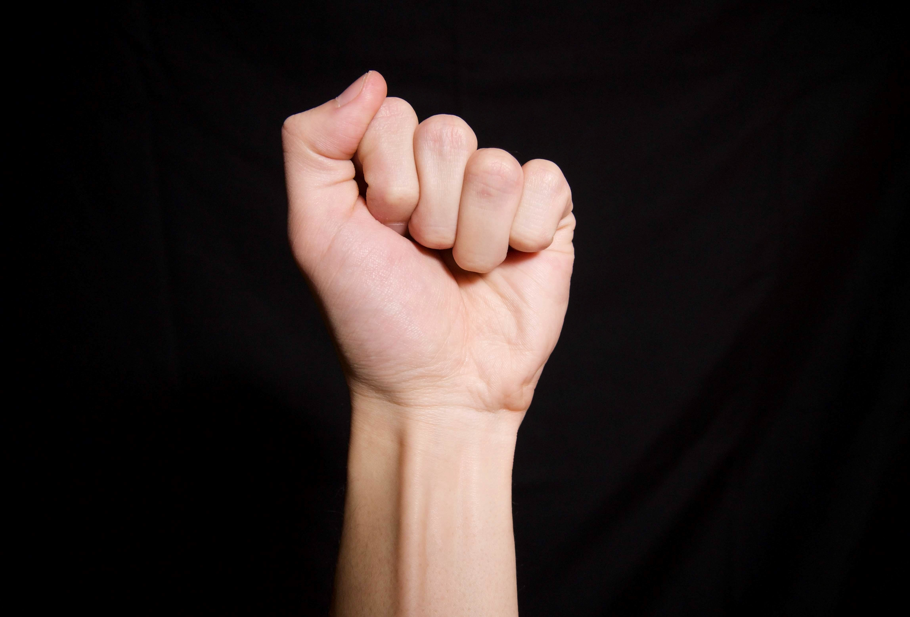

Rock Paper Scissors is a zero sum game that is usually played by two people using their hands and no tools. The
idea is to make shapes with an outstretched hand where each shape will have a certain degree of power and will
lead to an outcome.
What are the shapes of Rock Paper Scissors?

The rock is when you place your hand into the form of a simple fist.
The paper is when you place your hand in an outstretched position
This is when you hold your fist with your index and middle finger pointing outwards in a V shape.
Why is Rock Paper Scissors played?
This game is played by children and adults and is popular all over the world. Apart from being a game played to
pass time, the game is usually played in situations where something has to be chosen. It is similar in that way
to other games like flipping the coin, throwing dice or drawing straws. There is no room for cheating or for
knowing what the other person is going to do so the results are usually very satisfying with no room for
fighting or error.
What are the rules of RPS?
Although the game has a lot of complexity to it, the rules to play it are pretty simple.
The game is played where players deliver hand signals that will represent the elements of the game; rock, paper
and scissors. The outcome of the game is determined by 3 simple rules: